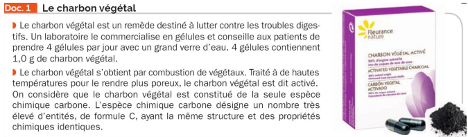
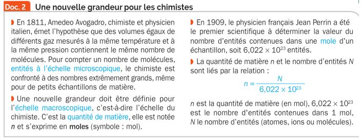
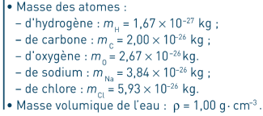
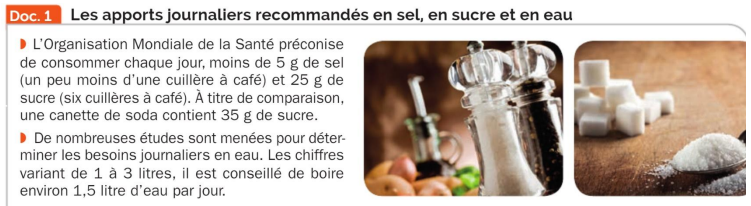
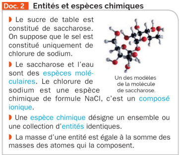
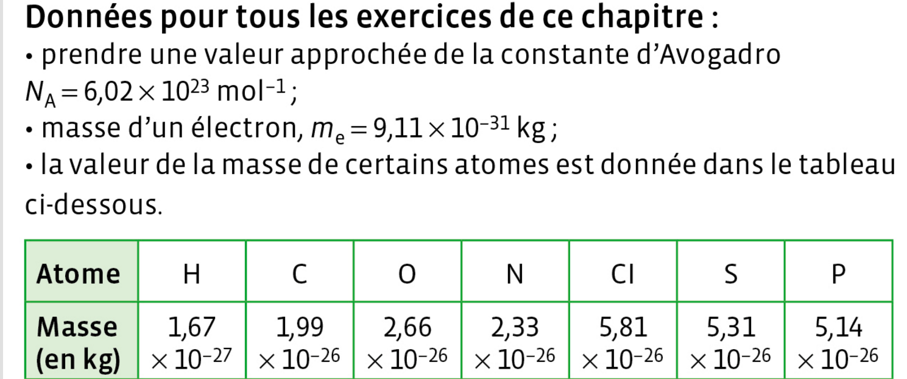
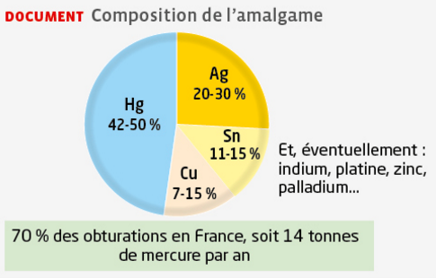
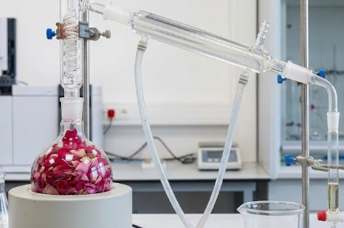

Compter les entités dans un échantillon de matière
Thème : Constitution et transformations de la matière · C. Poirault-Gauvin
- Déterminer la masse d'une entité à partir de sa formule brute et des masses atomiques.
- Calculer le nombre d'entités N dans un échantillon de masse m donnée.
- Calculer la quantité de matière n à partir de N et de NA.
1. Masse d'une entité
La masse d'une entité = somme des masses de tous ses atomes.
Si un atome apparaît plusieurs fois, on le multiplie.
Calculer la masse d'une molécule
M(H₂O) = (2 × 1 g/mol) + (1 × 16 g/mol)
M(H₂O) = 2 + 16
M(H₂O) = 18 g/mol

2. Nombre d'entités N
Simulation — explorer le nombre d'entités N
Donnée : m(NH₃) = 2,83×10-26kg
3. La quantité de matière n
Exemple appliqué — CO₂ (10 kg)
Animation — l'échelle de la mole
Simulation — de N vers n
Une autre façon de compter
Objectif : le chimiste doit, dans ses activités, dénombrer les entités (atomes, molécules ou ions) contenues dans un échantillon de matière. La quantité de matière lui permet de compter d'une autre façon. L'objectif de l'activité est de savoir compter en utilisant cette nouvelle grandeur : la quantité de matière.
Doc. 1 — Le charbon végétal

Doc. 2 — Une nouvelle grandeur pour les chimistes

Données

1. [APP] S'approprier
2. [REA] Réaliser
3. [REA] Réaliser
4. [ANA-RAI] Analyser - Raisonner
5. [REA] Réaliser
6. [VAL] Valider
Synthèse [COM] Communiquer
TP : La mole, unité adaptée à notre échelle
Une personne doit absorber quotidiennement des quantités précises en sucre, en sel et en eau pour se maintenir en bonne santé.
Objectif : vérifier par l'expérience, avec un exemple, que la mole est une unité adaptée à l'échelle macroscopique, c'est-à-dire à notre échelle.
Doc. 1 — Les apports journaliers recommandés en sel, en sucre et en eau

Doc. 2 — Entités et espèces chimiques

Données
Matériel à disposition : 1 cuillère – 2 coupelles – 1 balance – sel en poudre – sucre en poudre – sucre en morceaux.
1. [ANA-RAI] Élaborer un protocole (5 à 10 min max)
📞 APPEL 1
Faire vérifier vos deux protocoles par le professeur avant de passer à l'étape suivante.
2. [REA] Mettre en œuvre chaque protocole (15 min max)
📞 APPEL 2
Faire vérifier la mise en œuvre des protocoles par le professeur.
3. [REA] Exploitation des résultats (20 min max)
Synthèse [COM] Communiquer
Animation interactive : compter avec la quantité de matière
Objectif : manipuler une animation interactive pour visualiser le lien entre la quantité de matière n, le nombre d'entités N et le nombre d'Avogadro NA, et consolider les méthodes de calcul vues dans les activités précédentes.
Ressource : Physique-Chimie Seconde, éditions Hatier — Hatier Clic.
↗ Ouvrir l'animation dans un nouvel onglet
1. [APP] S'approprier
2. [REA] Réaliser
3. [ANA-RAI] Analyser - Raisonner
Synthèse [COM] Communiquer
Données pour tous les exercices de la séquence 06

Une masse m = 2,0 g d'amalgame dentaire est utilisée pour soigner une dent.
Donnée : masse d'un atome de mercure, mHg = 3,36×10⁻²⁵ kg.

a. Exprimer puis calculer la masse mHg de mercure présente dans l'amalgame permettant de soigner une dent.
Formule :
Calcul :
Résultat (avec unité) :
b. Exprimer puis calculer le nombre N d'atomes de mercure présents dans cet amalgame.
Formule :
Calcul (attention aux unités) :
Résultat :
c. Les données présentes dans l'énoncé sont-elles cohérentes avec le document ci-dessus ?
b. En convertissant mHg = 1,0 g = 1,0×10⁻³ kg : N = mHg / matome = 1,0×10⁻³ / 3,36×10⁻²⁵ ≈ 2,98×10²¹ atomes
c. Oui, les données sont cohérentes : le document indique un pourcentage massique d'argent compris entre 20 et 30% et de mercure entre 42 et 50%. Les valeurs de l'énoncé (30% pour Ag, 50% pour Hg) correspondent aux bornes hautes de ces intervalles.

1. Exprimer puis calculer la masse m d'une molécule de citronellol.
Formule :
Calcul :
Résultat (avec unité) :
2. Exprimer puis calculer la quantité n de citronellol dans m = 1 kg d'huile essentielle de rose.
Formule :
Calcul (attention aux unités) :
Résultat :
3. Exprimer puis calculer le nombre N de molécules de citronellol correspondant au seuil de détection olfactif.
Formule :
Calcul (attention aux unités) :
Résultat :
2. Formule : n = N / NA avec N = mcitronellol / m. Calcul : mcitronellol = 1000 × 0,45 = 450 g = 0,450 kg ; N = 0,450 / 2,60×10⁻²⁵ ≈ 1,73×10²⁴ ; n = 1,73×10²⁴ / 6,02×10²³. Résultat : n ≈ 2,88 mol.
3. Formule : N = mseuil / m. Calcul : mseuil = 5,00×10⁻¹³ g = 5,00×10⁻¹⁶ kg ; N = 5,00×10⁻¹⁶ / 2,60×10⁻²⁵. Résultat : N ≈ 1,92×10⁹ molécules.
Données :
• masse volumique de l'eau ρ = 1,0 kg·L⁻¹
• masses des atomes : voir onglet Données
1. Avant de devenir un super-héros, Scott a une masse mS = 70 kg et a besoin de boire une bouteille d'eau de volume V = 1,5 L par jour pour se désaltérer.
a. Exprimer puis calculer la masse meau d'une molécule d'eau.
Formule :
Calcul :
Résultat (avec unité) :
b. Exprimer puis calculer le nombre NS de molécules d'eau nécessaires à Scott pour se désaltérer quotidiennement.
Formule :
Calcul (attention aux unités) :
Résultat :
2. En état de super-héros, Ant-Man a une masse voisine de celle d'une fourmi, soit mA = 1,0 mg.
a. En faisant une hypothèse, exprimer puis calculer le volume d'eau Veau nécessaire à Ant-Man pour se désaltérer quotidiennement.
Formule :
Calcul (attention aux unités) :
Résultat :
b. Exprimer puis calculer le nombre NA de molécules d'eau nécessaires à Ant-Man pour se désaltérer quotidiennement.
Formule :
Calcul (attention aux unités) :
Résultat :
Ce nombre reste-t-il « considérable » ?
1b. Formule : NS = meau totale / meau, avec meau totale = ρ × V. Calcul : meau totale = 1,0 × 1,5 = 1,5 kg ; NS = 1,5 / 3,00×10⁻²⁶. Résultat : NS ≈ 5,0×10²⁵ molécules.
2a. Hypothèse : le volume d'eau bu est proportionnel à la masse corporelle (même ratio V/m que pour Scott). Formule : Veau = V × mA / mS. Calcul : Veau = 1,5 × (1,0×10⁻⁶ / 70). Résultat : Veau ≈ 2,1×10⁻⁸ L.
2b. Formule : NA = meau totale (A) / meau, avec meau totale (A) = ρ × Veau. Calcul : meau totale (A) = 1,0 × 2,1×10⁻⁸ ≈ 2,1×10⁻⁸ kg ; NA = 2,1×10⁻⁸ / 3,00×10⁻²⁶. Résultat : NA ≈ 7,1×10¹⁷ molécules. Ce nombre reste considérable : même réduit à la taille d'une fourmi, Ant-Man doit encore compter avec plus de 10¹⁷ molécules d'eau, un nombre bien trop grand pour être dénombré un par un.
Un paquet de 1 kg de riz contient en moyenne Ng = 40 000 grains de riz.
A. Compter en « paquets de riz »
a. Expliquer pourquoi le nombre de grains de riz (supposés tous identiques) par paquet de 1 kg est donné « en moyenne ».
b. Exprimer puis calculer la masse moyenne mg d'un grain de riz.
Formule :
Calcul :
Résultat (avec unité) :
c. Exprimer puis calculer le nombre N de grains de riz produits annuellement.
Formule :
Calcul (attention aux unités) :
Résultat :
d. Citer la grandeur évoquée dans le texte qui joue un rôle similaire à celui de la constante d'Avogadro NA utilisée pour déterminer une quantité de matière.
e. Exprimer puis calculer le nombre p de paquets de grains de riz produits annuellement dans le monde.
Formule :
Calcul :
Résultat :
B. Compter en quantité de matière
a. Calculer la quantité n de grains de riz (exprimée en mole) produite annuellement.
Formule :
Calcul :
Résultat :
b. La mole vous paraît-elle une unité adaptée pour évaluer des quantités d'entités macroscopiques comme des grains de riz ?
A.b. Formule : mg = mpaquet / Ng. Calcul : mg = 1 / 40000. Résultat : mg ≈ 2,5×10⁻⁵ kg (25 mg).
A.c. Formule : N = m / mg. Calcul : m = 503 millions de tonnes = 5,03×10¹¹ kg ; N = 5,03×10¹¹ / 2,5×10⁻⁵. Résultat : N ≈ 2,01×10¹⁶ grains.
A.d. Le nombre de grains par paquet, Ng = 40 000, joue un rôle analogue à celui de la constante d'Avogadro NA : il permet de regrouper un très grand nombre d'entités (les grains) en un « paquet » de référence plus facile à manipuler, tout comme NA regroupe des entités par mole.
A.e. Formule : p = N / Ng. Calcul : p = 2,01×10¹⁶ / 40000. Résultat : p ≈ 5,03×10¹¹ paquets (cohérent avec 15,9 paquets/s sur une année : 5,03×10¹¹ / (365×24×3600) ≈ 15,9 paquets/s ✓).
B.a. Formule : n = N / NA. Calcul : n = 2,01×10¹⁶ / 6,02×10²³. Résultat : n ≈ 3,34×10⁻⁸ mol.
B.b. Non, la mole n'est pas une unité adaptée ici : elle a été construite pour compter des entités microscopiques (atomes, molécules) extrêmement nombreuses (NA ≈ 6,02×10²³). Pour des objets macroscopiques comme des grains de riz, la quantité de matière obtenue est ridiculement petite (3,34×10⁻⁸ mol) : il est bien plus pertinent de compter directement en grains ou en paquets, comme fait en partie A.
🔐 Escape Game — Le coffre du laboratoire
Un post-it est collé sur le coffre : « Résous mes 4 cadenas pour reconstituer le code. Chaque cadenas te donnera un chiffre, dans l'ordre. » Utilise tout ce que tu as appris sur le comptage des entités : masse d'une entité, nombre d'entités N et quantité de matière n.
1 La masse d'une entité mystère
L'entité à identifier est le dioxyde de carbone CO₂.
2 La bonne formule
Le tiroir du coffre contient 4 fiches numérotées, une seule porte la bonne formule pour calculer le nombre d'entités N d'un échantillon. Choisis-la : son numéro est le 2e chiffre du code.
3 Compter les molécules d'eau
Donnée : masse d'une molécule d'eau m(H₂O) = 3,0×10⁻²⁶ kg.
4 Le dernier verrou : la quantité de matière
Donnée : constante d'Avogadro NA = 6,02×10²³ mol⁻¹.
🗝️ Ouvrir le coffre
Résous les 4 cadenas ci-dessus pour reconstituer le code à 4 chiffres, puis entre-le ici.
🔓 Le coffre s'ouvre !
Bravo, tu récupères le badge et tu peux enfin quitter le laboratoire ! Tu maîtrises maintenant les trois grandeurs clés pour compter les entités dans un échantillon de matière :
somme des masses atomiques
Masse & Entités
- Masse d'une entité = somme des masses de tous ses atomes
- N = méchantillon / mentité
Quantité de matière
- n = N / NA
- NA = 6,02×10²³ mol⁻¹ (constante d'Avogadro)
- Mole = lot de NA entités
- Masse d'une entité
- Somme des masses de tous les atomes qui la composent ; si un atome apparaît plusieurs fois, on multiplie sa masse par ce nombre.
- Nombre d'entités N
- N = méchantillon / mentité : nombre d'entités (sans unité) dans un échantillon, à partir de sa masse et de la masse d'une entité.
- Quantité de matière n
- n = N / NA : regroupe les entités par « lots » de NA entités (moles), plus pratique que de manipuler des nombres comme 10²⁶.
- Constante d'Avogadro NA
- NA = 6,02×10²³ mol⁻¹ : nombre d'entités contenues dans une mole.
- Mole
- Unité de quantité de matière correspondant à un lot de NA = 6,02×10²³ entités identiques.